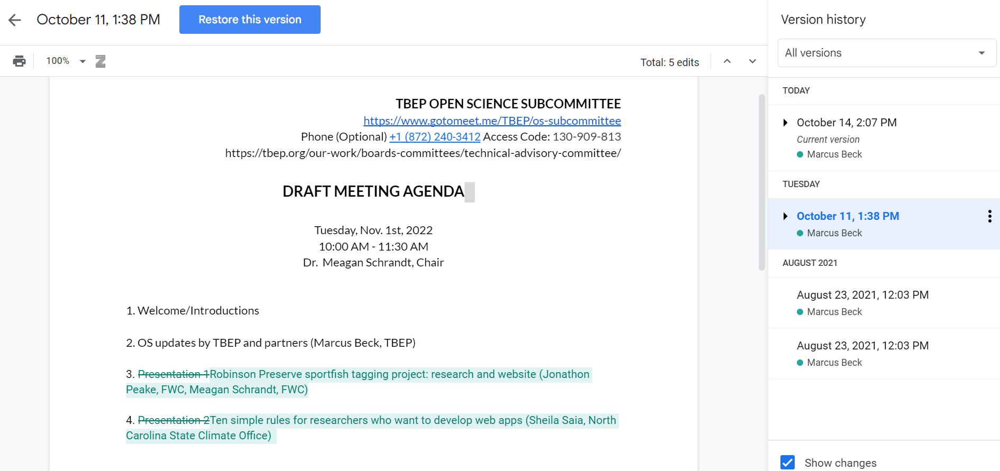
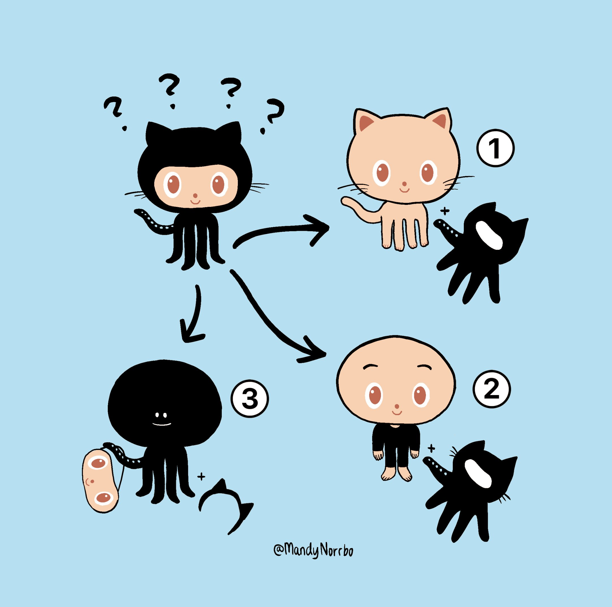

2 Open science for collaboration
2.1 Goals and motivation
This is the second module in our workshop on open science. This module will explore some open science tools to help you and your team become better collaborators and to better engage your science with external partners. We’ll introduce some essential elements of collaboration and discuss some readily available tools for doing so.
- Goal: understand methods of collaboration and the pros/cons of various tools
- Motivation: start building the tools for your open science toolbox
2.2 Essential elements of collaboration
We start our deep dive into open science by focusing on collaboration as a fundamental activity that can be enhanced through transparent, efficient, and reproducible tools. Having effective tools to work together is a critical theme of many open science practices. There are many tools in the toolbox and we need to introduce some core concepts before we demonstrate how to implement them in practice.
2.2.1 Workflow management
How do you organize your work each day? How do you make sure projects are on schedule and pressing deadlines are met? How do you plan for short-term and long-term goals? Do you have a five-year, ten-year, or longer career plan?
Work to achieve goals cannot be accomplished without a systematic approach to organizing tasks. Chances are, we each have our own system that works for us and was probably developed through trial and error. Although everyone has familiar workflows, they are often idiosyncratic and deeply entrenched by habit. That can be in direct conflict with collaboration when we try to mesh internal workflows with those of others.
Does this look familiar?

Although the above comic from xkcd speaks directly to file management, it hints at a broader problem of personal information management that can seriously complicate working with others. I’m sure we’ve all struggled to find that one file for that one project from a vague recollection of seeing it a few months ago.
Collaborative work can be facilitated through workflow management that helps you break out of old habits. We’ll introduce some specific internet-based tools below to facilitate workflows either for yourself or, better yet, working with others. These can help propel you towards open science.
2.2.2 Version control
A specific problem for workflow management that can be solved by open science tools is file management. Workflows can be immensely enhanced by tools that use strict guidelines for tracking changes and allowing a complete view of the evolution of a project. This is where version control comes in.
I’m sure many of you have fallen into this trap:

Version control is a way to track the development history of a project. It serves the joint purposes of:
- Formally documenting the changes that have been made to code or software
- Making sure that the development history is permanent
- Providing a system for collaborating across platforms (with friends!)
It’s more than saving files. Documenting changes with a set of commands that follow strict rules provides a transparent record for yourself and others, and establishing permanency ensures that any of the changes that are made can be vetted and accessed as needed. Think of it as an insurance plan for your project.
If you’ve ever used Google Docs, you might have noticed a feature that looks a lot like version control. The Google Drive platform is a great way to start working together and a great way to familiarize yourself with the basics of version control.

For any Google Doc, clicking on the link shown by the arrow will open the Version history pane which shows all of the edits that were made to the document. You can view any of the edits, who made the edits, view the changes (before/after) in the document, or even restore the document to a previous version.

These are the building blocks of version control as demonstrated with Google Docs:
- No iterative and ambiguous file naming
- History of changes assigned to each editor
- Ability to restore a previous version
Perhaps more importantly, these tools are in the cloud and openly accessible (unlike other cloud-based services). File links (via a URL) also do not change if a file is moved to a different location in the drive. Overall, the Google platform is an accessible means of improving collaboration (but not without it’s cons).
2.2.3 Git and GitHub
Although Google products can get you a long way towards better collaboration, they do not use dedicated version control software. These tools become more important as your projects become more complex - those beyond simple documents or spreadsheets.
The most widely used software for version control is Git. Although we do not cover the specifics of this software, it’s useful to understand the purpose and what it can do in making your work more open and impactful. Git is integrated with many popular open source development platforms, such as RStudio.
Many people often confuse Git with GitHub. GitHub is an online platform for working collaboratively through Git AND it allows you to be open with your work. We’ll provide some examples below of how this can be done. Importantly, you do not need to be an expert in Git to be able to use GitHub. This speaks volumes for how team efficiency can be improved with GitHub through better collaboration.
This recent blog provides a helpful introduction to Git/GitHub for the casual user.


Watch and learn
Workflow management in the real world - using GitHub to collaborate. Here we present some examples from the Tampa Bay Estuary Program State of the Bay report and water quality report card.
Watch and learn
Now we’ll demonstrate how to setup a version control project with RStudio, Git, and GitHub. This example will cover:
- Creating the project in GitHub
- Creating a file, adding content, and committing it to the project
- Setting up issues in GitHub
- Adding members to the project
- Creating a Kanban project board to assign tasks
Exercise and discussion
In small groups, setup a shared workspace using GitHub and create a project management board. Some real world examples of why you might do this were presented in the earlier watch and learn.
- Open GitHub in a web browser and have one person create a new repository (the big, green “New” button in Repositories). Add each member to the repository after it’s created (hint: Settings -> Collaborators)
- Have that same person create a project board for the repository (Hint: Projects -> New project -> board format)
- After each person accepts the invitation to the repository (check your email!), each new member create a new file in the repository (Hint: Click “Add file” near the top). Name it something unique, save and commit the changes
- Assign issues to different members of the repository to do something to the new files (Hint: on the right menu, select “Assignees”). Add the issue to the project board (Hint: on the right menu, select “Projects” and click the new project).
- Work on the issues until the time is up. Close each issue as they’re completed.